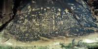

About Me
Hey there! I'm David Warren Smith, and there's nothing I love more than spending time with my family, making memories that'll last a lifetime. I'm a bit of a gaming enthusiast and I play table-top, role-playing, board, and computer games; you name it. For me, gaming is more than just fun; it's a way to spark creativity and dive into strategic thinking, which keeps things engaging.
I have an insatiable curiosity and I am always hungry to learn something new or explore new things. Outside of gaming, you'll usually find me outdoors hiking, hunting, boating, riding ATVs, and even swimming. I enjoy getting out there and staying active. I also love building and tinkering. There's just something satisfying about creating things (or taking them apart to see how they tick).
If you're interested, you can catch a glimpse of my latest adventures on Facebook or connect with me on LinkedIn for more professional stuff. I'm always up for a good conversation with all kinds of folks!